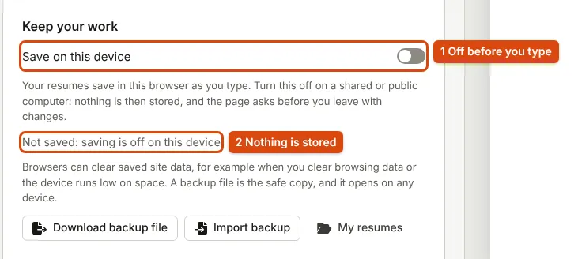
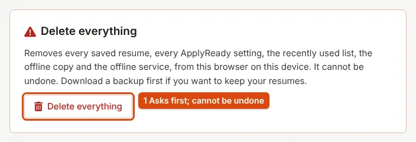

How to Protect Your Privacy on a Shared or Cyber Cafe Computer
Use a private window, switch resume saving off before you type, take your files with you, then delete everything ApplyReady stored and clear the Downloads folder.
What this tutorial covers
Applying for jobs often means typing your phone number, email and work history, and handling a photo, a signature and ID documents. On a computer that other people use after you, those can be left behind in three places: what websites store in the browser, the files you downloaded, and the accounts you signed in to. This page shows how to leave nothing in ApplyReady and gives the habits that cover the rest. For checking any website before you give it a document, read staying safe with document uploads.
What ApplyReady does and does not store
ApplyReady has no accounts, sets no cookies and has no server that receives your files. Everything it keeps is stored by the browser on this computer, and the Your data page lists all of it:
- Saved resumes from the resume builder, unless saving is switched off.
- Small settings: the theme, only if you picked one, and the names of up to six tools you opened recently (never a file name or anything you typed). The recent list can be switched off.
- An offline copy of ApplyReady's own pages and code, so the tools open without a connection. It holds nothing of yours.
Photos, signatures and PDFs that you open in the image and PDF tools stay in the page's memory and are never stored; closing the tab forgets them. What ApplyReady cannot remove for you: files you downloaded, the browser's history of pages you visited, and anything you did on other websites.
Before you start
- Your own storage for the finished files: your email, a cloud drive or a USB stick you trust.
- A backup file of your resume, if you made one before on your own device, so you can bring the resume with you. See backing up and restoring resumes.
- Five minutes at the end to clean up. Do not skip it when the queue is long.
Step 1: Open a private window
In most browsers, press Ctrl+Shift+N (Chrome and Edge) or Ctrl+Shift+P (Firefox), or choose New Incognito window or New private window from the menu. When you close every private window, the browser deletes the history, cookies and site data from that session, including anything ApplyReady stored. Downloads are not deleted: they stay in the Downloads folder.
Step 2: Switch resume saving off before you type
Open the resume builder, select the Download tab, and under Keep your work switch off Save on this device. The same switch is in My resumes, as Save resumes on this device.

What you see: a message Saving on this device is off. Nothing new is stored in this browser., the status Not saved: saving is off on this device under the title, and a notice that says nothing you type is stored and that it is lost when you close the tab. Only the choice itself is remembered, so the next visit in the same browser also starts with saving off. If resumes were saved here earlier, the notice says how many are still in the browser.
With saving off, the page asks before you leave or close it while there are changes on screen, so you do not lose your work by accident. Download your PDF, and a backup file if you want to continue later on another device.
Step 3: Take your files with you
Every tool saves its result to the browser's Downloads folder. Send each file you need to your own email or cloud drive, or copy it to your USB stick, before you clean up. Upload files to job portals straight from the Downloads folder.
Step 4: Delete everything ApplyReady stored
Open Your data and scroll to Delete everything. Select Delete everything. A window asks Delete everything ApplyReady stored? and lists what will be removed: saved resumes, settings, the offline copy and the offline service. Confirm with Delete everything.

What you see: a message that lists what was deleted and ends Nothing ApplyReady stored is left in this browser. If ApplyReady is open in another tab, the resume database cannot be deleted while that tab holds it; the message says so. Close the other tabs and select Delete everything again.
To remove only resumes, use Delete all saved resumes in My resumes. To stop the recently used list, switch off Remember the tools I use on Your data.
Step 5: Clear the Downloads folder and the rest
- Open the Downloads folder and delete every file you downloaded: resume PDFs, photos, signatures, ZIP files and backup files.
- Empty the Recycle Bin or Trash, or the files can be restored from there.
- Clear the browser's list of downloads, and sign out of your email and every job portal.
- Close every browser window you opened, private or not.
What you get
- Nothing of yours left in ApplyReady on that computer: no saved resume, no settings, no offline copy.
- Your files with you, in your own email, drive or USB stick.
If something goes wrong
I typed before switching saving off
The resume was saved. Switch saving off, then open My resumes and delete it, or use Delete everything on Your data at the end.
I closed the tab with saving off and lost my resume
That is what saving off means: nothing was stored. If you downloaded a backup file or a Word copy, you can start again from it; a backup file imports into the builder.
Delete everything says the database could not be deleted
Another ApplyReady tab is open. Close it and select Delete everything again.
The computer runs a cleaning program at log-off
Do not rely on it. Some cafe computers restore themselves at restart and some do not; deleting your files yourself is the only certain way.
Sources
- Google Chrome Help: Browse in Incognito mode, what a private window keeps and deletes
- Mozilla Support: Private Browsing in Firefox
- Google Chrome Help: Delete browsing data in Chrome
- CERT-In: Safe Internet Best Practices booklet, Cyber Swachhta Kendra
Every step on this page was followed in the current resume builder and Your data page. Found a mistake? Report an error.